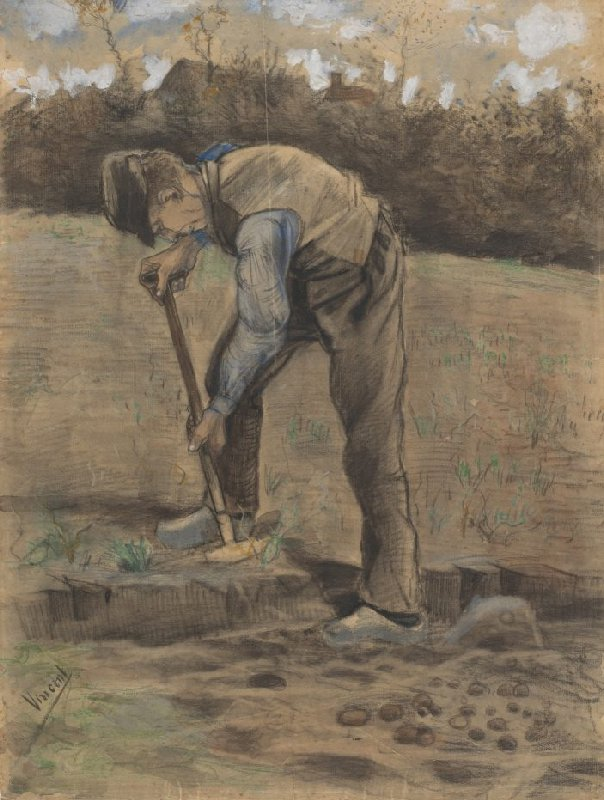
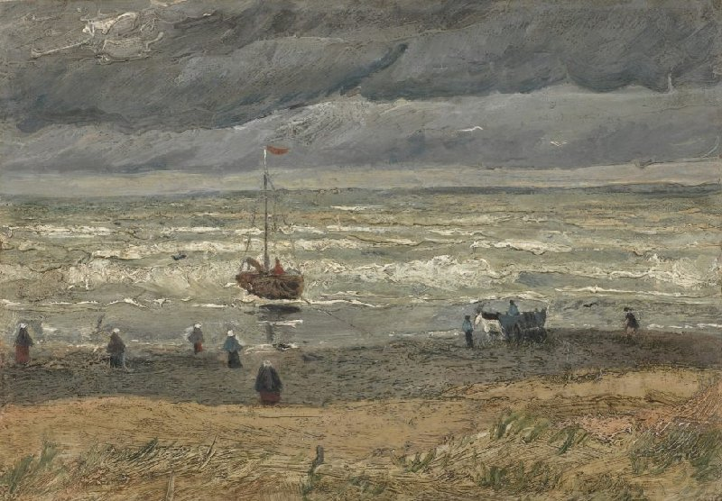

Vincent van Gogh's artistic journey
Main page
Early years
Paris
Arles
Saint-Rémy-de-Provence
Auvers-sur-Ois

Digger
, Etten, October 1881
The Potato Eaters
, Nuenen, April-May 1885

View of the Sea at Scheveningen
, The Hague, August 1882
Head of a Skeleton with a Burning Cigarette
, Antwerp, January-February 1886